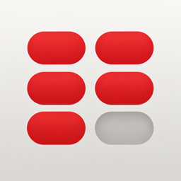

PosolPrivacy policy
Last updated: September 27, 2026
Your prescriptions, doses and times live only on your iPhone. There are no accounts or sign-up. The only thing that leaves your phone is anonymous usage statistics, with no health data at all, and you can turn them off.
What the app stores and where
- Your prescriptions and doses (medications, doses, times, what you mark as taken or skipped) are stored on the device itself.
- Your preferences (sleep hours, meal times, reminder settings) are stored on the device, in a space shared with the Posol widget so it can show you your next dose.
- Photos and PDFs of prescriptions are processed on the phone to read the text. They aren't uploaded anywhere. The image isn't kept: only the result you confirm is saved.
None of this leaves the device.
Usage statistics
To learn which parts of the app are used and where something fails, Posol sends anonymous statistics to TelemetryDeck, an analytics service with servers in the European Union. It sends:
- Which screens are opened and which actions are taken, without their content: for example, "a prescription was scanned", "3 medications were read, 1 had to be corrected" or "a dose was marked as taken, on time, from the Lock Screen".
- Technical data: phone model, iOS version, language and app version.
- A random, encrypted identifier that can't tell who you are.
Medication names, doses, times, anything read from a prescription and Health data are never sent. TelemetryDeck doesn't store your IP address and isn't used for advertising or to track you across apps.
You can turn them off in Settings → Your data → Anonymous statistics.
Health (HealthKit)
Only if you explicitly ask for it ("Get my hours from Apple Health"), Posol reads your sleep hours from the last two weeks in the Health app to suggest a schedule and avoid scheduling doses in the middle of the night. That data is used on the spot, isn't stored, isn't shared and is never used for advertising. You can deny the permission: the app works the same.
Reminders
Reminders are local notifications scheduled by the phone itself. There's no notification server and no identifiers sent to third parties.
Third parties
The only third-party service is TelemetryDeck, for the anonymous statistics described above. There's no advertising. Nobody is tracked, inside or outside the app.
Backups
Posol doesn't upload backups to the cloud. If you delete the app or switch phones, what you've logged is lost, unless you've backed up the device with iCloud or with the Finder; in that case the data goes inside that backup and is restored with it.
Your data is yours
You can delete everything from Settings → Your data → Delete everything. Uninstalling the app also removes what it stored.
Children
Posol isn't directed at children under 13.
Changes
If this policy changes, this page will be updated with its date.
Contact
Write to angeljackson0933@gmail.com.